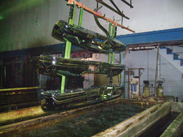

Module 4—Batteries and Balance
Lesson 4—Commercial Applications of Electrolytic Cells
 Get Focused
Get Focused

In Lesson 3 you saw how an electrolytic cell can be used to produce pure elements such as the gases hydrogen, oxygen, and chlorine, and pure metals like copper. The electrolytic cell causes chemical change by forcing a redox reaction to occur.
In previous science courses you may have seen a demonstration of the reactivity of sodium, potassium, and lithium (group 1 metals) with water. Do you recall which metals reacted most vigorously—so much so that you could see a flame? How could such reactive metals ever be converted into their elemental forms? Is it possible that an electrolytic cell could be used for the production of all metals?
In Lesson 3 you observed the operation of laboratory-scale electrolytic cells. How is the electrolytic cell used to plate chromium onto automobile bumpers, as shown in the photograph, similar and different to the cells you build in a laboratory? In this lesson you will investigate society's use of electrolytic cells as a technology.
Consider the following question as you complete Lesson 4:
- What are some of the practical applications of electrolytic cells?
 Module 4: Lesson 4 Assignment
Module 4: Lesson 4 Assignment
There is no assignment for this lesson.
You must decide what to do with the questions that are not marked by the teacher.
Remember that these questions provide you with the practice and feedback that you need to successfully complete this course. You should respond to all the questions and place those answers in your course folder.